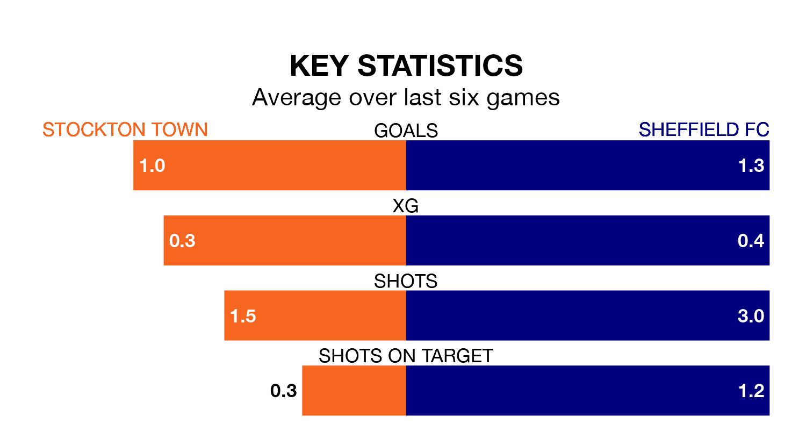

Stockton Town host Sheffield FC on Saturday in the Northern Premier League Division One East.
In their last league match, on Monday, Stockton drew with Consett 2-2 away.
Sheffield FC lost, 2-1 away at Belper Town.
With 65 goals in 34 games so far this season, Stockton are the league's highest scorers with 1.9 goals per game. And they are conceding fewer than average, letting in 26 goals at a rate of 0.8 per game.
Sheffield FC are also above average scorers, with 1.6 goals per game, compared to a league average of 1.5. They have also conceded 1.6 goals per game.
Town are top of the table after 34 games, of which they have won 20 and drawn 10, earning 70 points.
The away side are 11 places behind the hosts in 12th, with 12 wins and five draws putting them on 41 points.
In the last five years, Stockton and Sheffield FC have played each other on five occasions. Stockton won two of them, Sheffield FC one, and they drew twice.
On average, Stockton scored 2.4 goals and Sheffield FC 1.0 in those matches.
Their last meeting was on November 11, when Stockton won 2-0 away.
Stockton are in mixed form in the Northern Premier League Division One East, with two wins and three draws from their last six games.
With two wins and two draws over that period, Sheffield FC's form is slightly worse – they have taken eight points from 18, compared to Stockton's nine.
Updated: 16:41 (UTC), 04/04/24